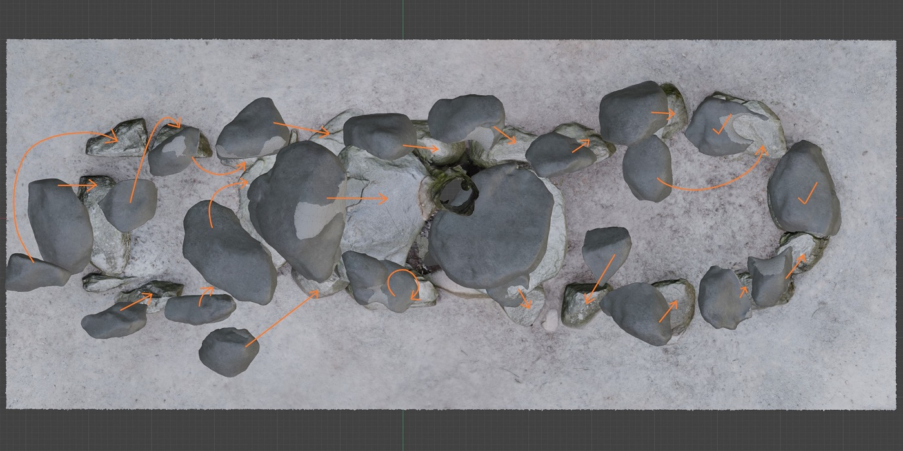

Geschichte und Informationen zu den Düwelsteinen
Die Düwelsteine liegen in der Bauernschaft Nordick und sind etwa 3,5 km von der Gemeinde Heiden in östliche Richtung entfernt. Das Großsteingrab kann mit dem Auto, aber auch mit öffentlichen Verkehrsmitteln erreicht werden.
Das Megalithgrab ist eines der ältesten, im Gelände sichtbaren ur- und frühgeschichtlichen Relikte der Region. Erste Nachweise von Grabungen stammen aus der Frühen Neuzeit und die Forschungsneugier hat sich bis heute gehalten.

Als eine der südlichsten Fundstellen eines Großsteingrabes der Trichterbecherkultur in Westfalen mit noch vielen erhaltenen Megalithsteinen, wurde 1932 eine Grabung dazu genutzt, das Megalithgrab zu restaurieren und die Steine in ihre damals rekonstruierte Position zurückzustellen.
Die Steine gehören nicht nur zu einem eindrücklichen Grab, sie sorgten auch für Geschichten, die bis heute überliefert sind und die Existenz der Steine zu erklären versuchen.